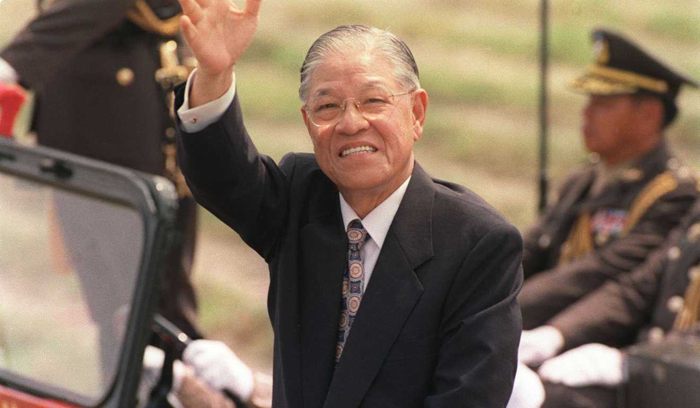

Today, Taiwanese citizens choose their leader every four years through direct election. If it were not for the actions of Lee Teng-hui when he was in office, this might not be the case. As president, Lee pushed to end the state of martial law and reinstate elections for leaders of the Republic of China. It is because of these courageous decisions that I think of Lee as the true father of Taiwanese democracy.